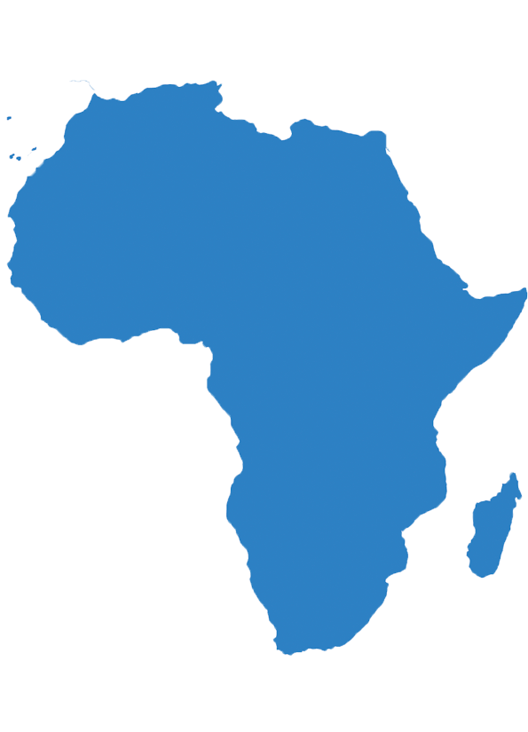

África
Países
"Os países da África são as nações cujos territórios encontram-se no continente africano e distribuem-se em grandes regiões: África Central; África Meridional; África Setentrional; África Ocidental; e África Oriental.
Economia
A economia da África é pautada pela exploração de recursos naturais, como petróleo, gás e minérios como o ouro e diamantes. O continente, contudo, é o mais pobre do mundo, resultado da exploração colonial e neocolonialista. A agricultura, o turismo, a indústria de transformação e os serviços ainda são praticados de maneira precária na maior parte das nações africanas.
Cultura
Cultura africana é o conjunto de conhecimentos, crenças, valores e costumes dos povos que habitam o continente africano. Como a África é imensa e diversa, o mais correto é falar não de uma única cultura, mas de “culturas africanas”, no plural. Só para se ter uma ideia de tamanha diversidade cultural, existem na África cerca de 490 etnias diferentes, muitas delas convivendo dentro de um mesmo país. Só na África do Sul, há 11 idiomas e diversos grupos étnicos, dentre os quais os zulus, os xhosas, os pedis, os sotos e os tswanas.
Política
A maioria dos países do continente possuem governos "democraticamente" eleitos. Atualmente, 55 estados são membros da União Africana, uma união continental que foi formada em 2002, e que tem Adis Abeba, na Etiópia, como sua sede. No entanto, é frequente que as eleições sejam consideradas sujas por fraude eleitoral, tanto internamente, como pela comunidade internacional. Por outro lado, ainda subsistem situações em que o presidente ou o partido governamental se encontram no poder há dezenas de anos.
Geografia
Na África Oriental se localiza o Vale do Rift, que se estende da Etiópia a Moçambique. Sua formação se deu a partir do processo de separação de placas tectônicas e, por essa razão, é caracterizado por profundos vales, onde se formam os Grandes Lagos, que incluem os lagos Vitória, Tanganica e Niassz. É caracterizado ainda pela presença de vulcões ativos, decorrentes da tectônica da região. Destacam-se ainda as planícies litorâneas, no norte e ao sul, onde o continente é banhado pelo Atlântico e Índico, bem como as áreas de depressão na África Meridional.
Curiosidades
- Muitos turistas procuram a África para fazerem safári. O encontro com animais selvagens nas grandes savanas africanas está no roteiro de muitos aventureiros.
- O Rio Nilo é considerado o maior rio do mundo.
- Dos 30 países mais pobres do mundo, 21 são africanos.
- Angola e África do Sul são os países com maior Produto Interno Bruto da África.
- O Saara, maior deserto do mundo, localiza-se na África.